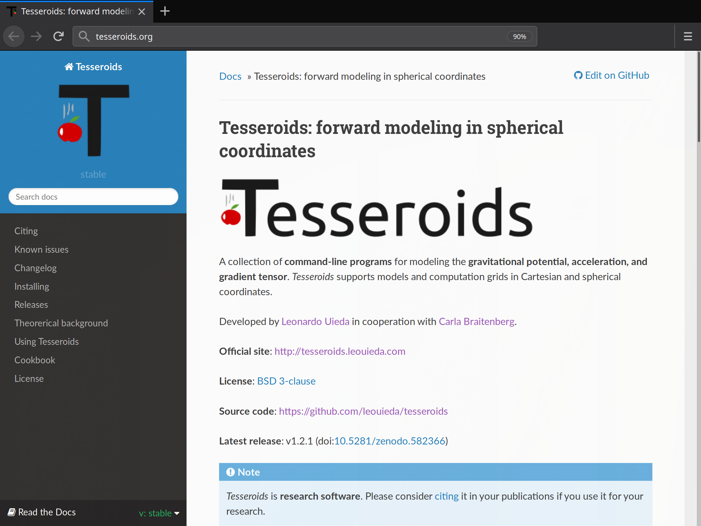
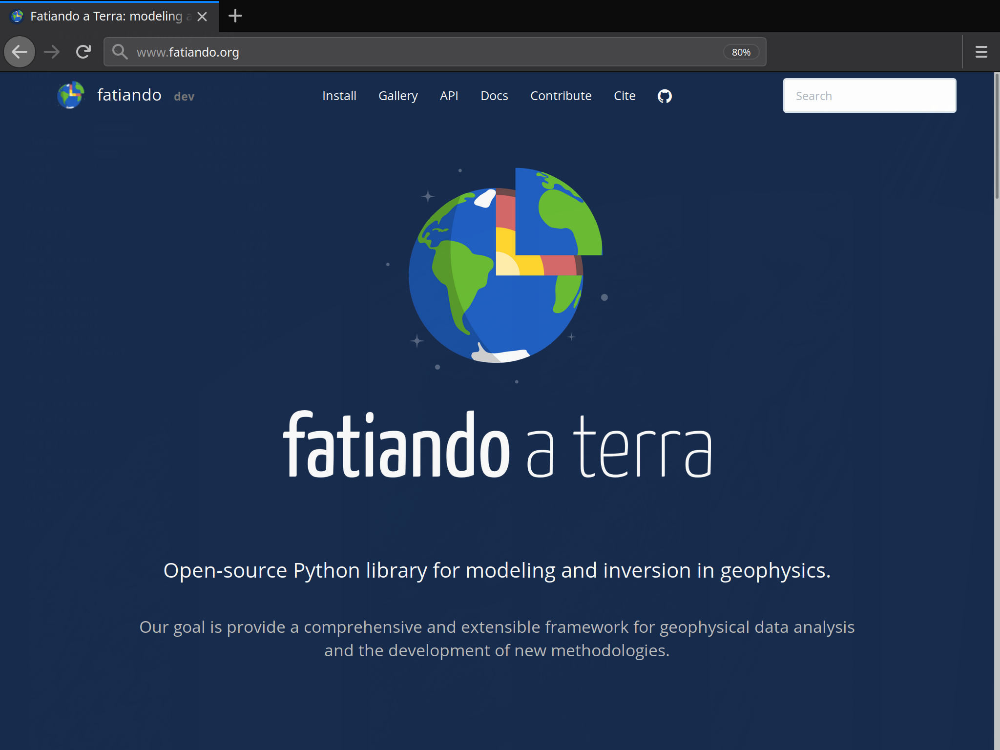

Exploring the Earth through software
My current research and outlook, and its place within teaching and research in the School of Environmental Sciences
Leonardo Uieda
University of Liverpool - Jan 9, 2019
Background
Brazilian in Hawai'i
Open-Source

Tesseroids

Fatiando a Terra

Generic Mapping Tools